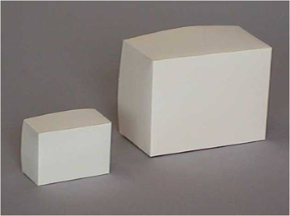
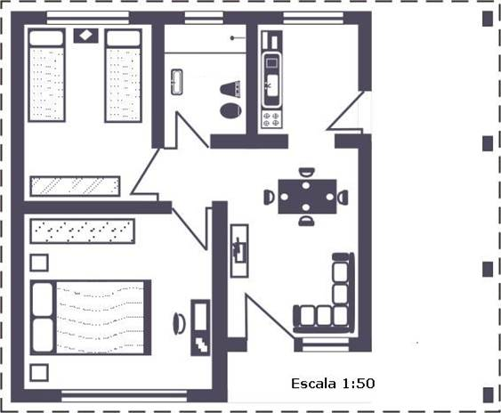

Teorema de Pitágoras. Semejanza
Figuras semejantes
Dos figuras son semejantes cuando sólo difieren en su tamaño. En tal caso, los segmentos correspondientes son proporcionales, es decir, cada longitud en una de ellas se obtiene multiplicando la longitud correspondiente en la otra por un número fijo, llamado razón de semejanza. Por ejemplo:

La semejanza de figuras se aplica en la realidad en planos, mapas y maquetas, en las cuales la razón de semejanza se denomina escala.

En el siguiente interactivo puedes comprobar lo que sucede al crear figuras semejantes: se conservan los ángulos y las distancias son proporcionales. Para ello mide los segmentos OA, OA', OB, OB', AB y A'B', calcula su razón de proporcionalidad y verás lo que sucede.
(de Antonio Omatos Soria)
Obra publicada con Licencia Creative Commons Reconocimiento No comercial Compartir igual 4.0